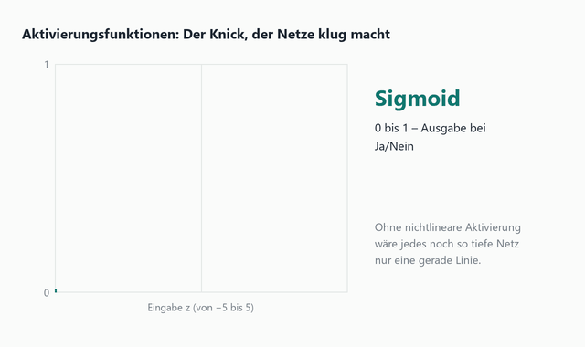
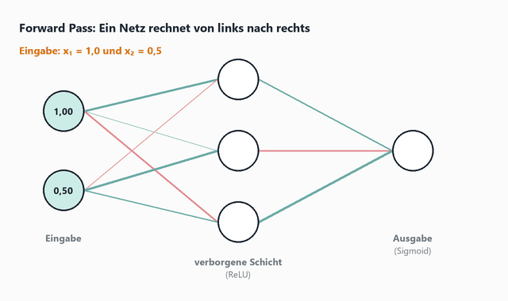
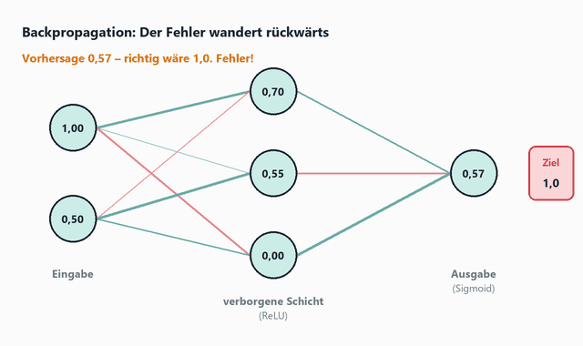
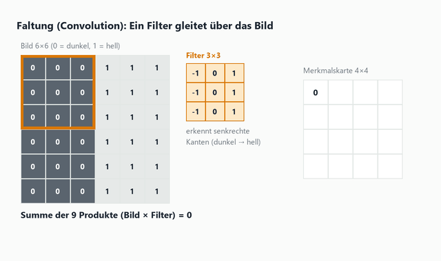
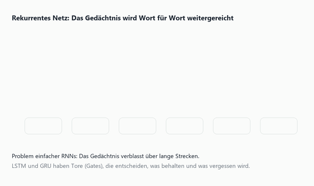
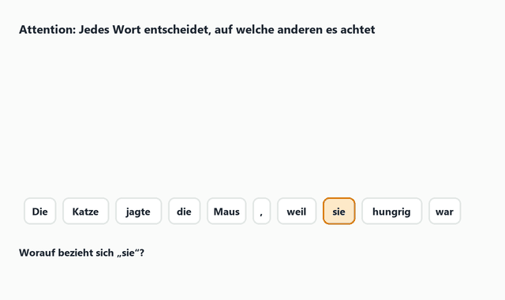

Neuronale Netze: Wie Deep Learning Bilder, Sprache und Zeitreihen versteht
Neuronale Netze stecken hinter Gesichtserkennung, Spracheingabe, Übersetzung und Chat-Assistenten. Sie wirken geheimnisvoll, bestehen aber aus einfachen Bausteinen: gewichtete Summen, ein Knick (Aktivierung) und viele Wiederholungen. In diesem Modul rechnen Sie ein Neuron von Hand, verfolgen einen Forward Pass, verstehen Backpropagation und lernen die wichtigsten Architekturen kennen: CNN für Bilder, RNN/LSTM für Abfolgen und den Transformer, auf dem heutige Sprachmodelle beruhen.
Wie ein neuronales Netz rechnet und lernt
Vom Gehirn zum künstlichen Neuron
Sie überlegen, ob Sie heute joggen gehen. Das Wetter ist schön (wichtig für Sie: +3), Sie sind müde (−2), ein Freund kommt mit (+1). Zusammengezählt: +2 – über Ihrer persönlichen Schwelle, also gehen Sie. Ein künstliches Neuron trifft Entscheidungen genau so: gewichtete Gründe addieren, mit einer Schwelle vergleichen.
Nervenzellen empfangen Signale über Dendriten, summieren sie und „feuern“, wenn eine Schwelle überschritten ist. Verbindungen (Synapsen) werden durch Nutzung stärker oder schwächer. Künstliche Netze übernehmen nur diese Grundidee – sie sind keine Nachbildung des Gehirns.
Eingaben x, Gewichte w (wie wichtig ist jede Eingabe), Bias b (verschiebt die Schwelle), Aktivierungsfunktion f (entscheidet, was weitergegeben wird).
Rechenweg: x = (1; 2), w = (0,5; −0,25), b = 0,1
- Gewichtete Summe: 0,5 · 1 + (−0,25) · 2 + 0,1 = 0,5 − 0,5 + 0,1 = 0,1
- Mit ReLU: max(0; 0,1) = 0,1 · mit Sigmoid: σ(0,1) ≈ 0,525
Weitere Beispiele: Ein Neuron im Alltag und mit den Aktivierungen
Eingaben: Wetter schön (1 = ja), müde (1 = ja), Freund kommt mit (1 = ja). Gewichte: Wetter +3, müde −2, Freund +1. Bias −1 (man geht nur, wenn die Gründe etwas überwiegen).
- Schöner Tag, müde, Freund kommt: z = 3 · 1 − 2 · 1 + 1 · 1 − 1 = 1 → positiv → man geht joggen.
- Regen, müde, kein Freund: z = 0 − 2 + 0 − 1 = −3 → negativ → man bleibt zu Hause.
Die Gewichte sagen, wie wichtig jeder Grund ist; der Bias legt fest, wie hoch die Schwelle liegt. Ein Netz lernt beides aus Beispielen, statt dass jemand die Zahlen vorgibt.
| z | ReLU | Sigmoid | Tanh |
|---|---|---|---|
| −2 | 0 | 0,119 | −0,964 |
| 0,1 | 0,1 | 0,525 | 0,100 |
| 2 | 2 | 0,881 | 0,964 |
ReLU lässt Positives durch und sperrt Negatives, Sigmoid drückt alles in den Bereich 0 bis 1 (Wahrscheinlichkeit), Tanh in den Bereich −1 bis 1.
Eingaben (auf 0 bis 1 skaliert): Einkommen 0,8 und Schuldenquote 0,6. Gewichte: +1,5 und −2,0; Bias +0,2. z = 1,5 · 0,8 − 2,0 · 0,6 + 0,2 = 1,2 − 1,2 + 0,2 = 0,2. Mit Sigmoid: σ(0,2) ≈ 0,55 – leicht über 50 %. Ein einziges Neuron entspricht der logistischen Regression aus Modul 4. Mehrere Neuronen hintereinander machen daraus ein Netz.
Frage (5 Punkte): Ein Neuron hat die Eingaben x = (2; 3), Gewichte w = (0,5; 0,2) und den Bias b = −1. Berechnen Sie z, die Ausgabe mit ReLU und die Ausgabe mit Sigmoid.
Musterlösung: z = 0,5 · 2 + 0,2 · 3 − 1 = 1 + 0,6 − 1 = 0,6 (2 Punkte). ReLU: max(0; 0,6) = 0,6 (1 Punkt). Sigmoid: 1 : (1 + e^−0,6) ≈ 0,646 (2 Punkte).
Ein Neuron: Eingaben mal Gewichte, plus Bias, durch die Aktivierungsfunktion. Gelernt werden die Gewichte und der Bias.
Das Perzeptron und das XOR-Problem
Ein Lichtschalter am Treppenhaus mit zwei Schaltern (oben und unten): Das Licht brennt, wenn genau einer der Schalter umgelegt ist. Diese „entweder – oder“-Regel (XOR) kann ein einzelnes Neuron nicht lernen. Das war 1969 eine große Enttäuschung – und trug zum ersten KI-Winter bei.
| x₁ | x₂ | UND | ODER | XOR |
|---|---|---|---|---|
| 0 | 0 | 0 | 0 | 0 |
| 0 | 1 | 0 | 1 | 1 |
| 1 | 0 | 0 | 1 | 1 |
| 1 | 1 | 1 | 1 | 0 |
Ein einzelnes Neuron mit Stufenfunktion (Ausgabe 0 oder 1). Es zieht eine gerade Linie durch den Raum. UND und ODER lassen sich mit einer Linie trennen – XOR nicht: Die beiden „1“-Punkte liegen diagonal gegenüber.
Mit einer verborgenen Schicht aus zwei Neuronen (eines lernt ODER, eines lernt UND) und einem Ausgabeneuron („ODER, aber nicht UND“) ist XOR lösbar. Dieses mehrschichtige Perzeptron (MLP) braucht aber ein Verfahren, um die inneren Gewichte zu lernen: Backpropagation (Lektion 6).
Das XOR-Problem selbst lösen
Mit einer Stufenfunktion (Ausgabe 1, wenn z > 0, sonst 0):
- ODER: Gewichte (1, 1), Bias −0,5. Punkt (0|0): −0,5 → 0; (0|1): 0,5 → 1; (1|0): 0,5 → 1; (1|1): 1,5 → 1. ✓
- UND: Gewichte (1, 1), Bias −1,5. Punkt (1|1): 0,5 → 1; alle anderen negativ → 0. ✓
Für XOR gibt es dagegen keine Gewichte, die beide „1“-Punkte (0|1) und (1|0) über die Schwelle bringen und zugleich (1|1) darunter lassen, denn (1|1) hätte immer die Summe der beiden Einzelbeiträge.
Verborgenes Neuron 1 = ODER, verborgenes Neuron 2 = UND. Das Ausgabeneuron rechnet h₁ − h₂ − 0,5 (Stufenfunktion).
| x₁ | x₂ | h₁ (ODER) | h₂ (UND) | z = h₁ − h₂ − 0,5 | Ausgabe |
|---|---|---|---|---|---|
| 0 | 0 | 0 | 0 | −0,5 | 0 |
| 0 | 1 | 1 | 0 | 0,5 | 1 |
| 1 | 0 | 1 | 0 | 0,5 | 1 |
| 1 | 1 | 1 | 1 | −0,5 | 0 |
Das Ergebnis ist genau XOR. Die verborgene Schicht hat das Problem in zwei einfache Teilprobleme zerlegt.
Entscheidet bei einer Qualitätsprüfung allein die Länge und die Breite über „in Ordnung“ (je größer, desto besser), kann eine gerade Linie die Klassen trennen. Gilt „zu klein oder zu groß ist schlecht, nur mittlere Größen sind gut“, geht das nicht mit einer Linie – wie bei XOR. Reale Zusammenhänge sind meist nichtlinear. Genau dafür braucht man mehrere Schichten.
Frage (5 Punkte): Warum kann ein einzelnes Perzeptron das XOR-Problem nicht lösen, und wie löst man es?
Musterlösung: Ein Perzeptron trennt nur mit einer geraden Linie; die beiden „1“-Fälle von XOR liegen diagonal gegenüber und sind nicht linear trennbar (2 Punkte). Mit einer verborgenen Schicht (z. B. ein Neuron für ODER, eines für UND) und einem Ausgabeneuron, das „ODER, aber nicht UND“ bildet, wird XOR lösbar (3 Punkte).
Ein einzelnes Neuron trennt nur linear. Erst mehrere Schichten mit nichtlinearer Aktivierung lösen Probleme wie XOR.
Aktivierungsfunktionen
Ein Dimmer, der ab einem Punkt plötzlich heller wird, ein Lautstärkeregler, der unten nichts tut und dann gleichmäßig lauter wird: Solche Knicke machen aus einfachen Summen ein vielseitiges Werkzeug. Ohne Knick wäre jedes Netz – egal wie tief – nur eine einzige gerade Linie.

| Funktion | Formel | Wertebereich | Einsatz | Hinweis |
|---|---|---|---|---|
| Sigmoid | 1 / (1 + e⁻ᶻ) | 0 bis 1 | Ausgabe bei Ja/Nein | Gradient verschwindet bei großen |z| |
| Tanh | (eᶻ − e⁻ᶻ) / (eᶻ + e⁻ᶻ) | −1 bis 1 | RNNs, ältere Netze | nullzentriert |
| ReLU | max(0, z) | 0 bis ∞ | Standard in verborgenen Schichten | schnell; „tote Neuronen“ möglich |
| Leaky ReLU | z, sonst 0,01 · z | −∞ bis ∞ | Alternative zu ReLU | keine toten Neuronen |
| Softmax | eᶻⁱ / Σ eᶻʲ | 0 bis 1, Summe 1 | Ausgabe bei mehreren Klassen | Wahrscheinlichkeitsverteilung |
| Linear | z | beliebig | Ausgabe bei Regression | – |
Rechenweg Softmax: Rohwerte (2; 1; 0) für Katze, Hund, Vogel
- e² ≈ 7,389 · e¹ ≈ 2,718 · e⁰ = 1 → Summe ≈ 11,107
- Katze 7,389 / 11,107 ≈ 0,665 · Hund ≈ 0,245 · Vogel ≈ 0,090
- 66,5 % Katze – zusammen genau 100 %.
Binäre Klassifikation → 1 Neuron mit Sigmoid. Mehrere Klassen → so viele Neuronen wie Klassen mit Softmax. Regression → 1 Neuron, linear. Verborgene Schichten → ReLU.
Weitere Beispiele: Aktivierungen im Detail
| z | Sigmoid | Tanh | ReLU | Leaky ReLU (0,01) |
|---|---|---|---|---|
| −2 | 0,119 | −0,964 | 0 | −0,02 |
| 0 | 0,5 | 0 | 0 | 0 |
| 2 | 0,881 | 0,964 | 2 | 2 |
Die Steigung der Sigmoid-Funktion beträgt höchstens 0,25 (bei z = 0) und wird für große |z| winzig: bei z = 5 nur etwa 0,993 · 0,007 ≈ 0,007. Beim Rückwärtsrechnen werden die Steigungen Schicht für Schicht multipliziert. Bei zehn Sigmoid-Schichten ergibt sich im Bestfall 0,25¹⁰ ≈ 0,000001: Die ersten Schichten bekommen kaum noch Rückmeldung und lernen nicht. ReLU hat für positive Werte die Steigung 1 und vermeidet dieses „Verschwinden“.
| Aufgabe | Ausgabeschicht |
|---|---|
| Kündigt der Kunde? (ja/nein) | 1 Neuron, Sigmoid |
| Welche von 5 Fehlerarten liegt vor? | 5 Neuronen, Softmax |
| Wie hoch ist der Stromverbrauch morgen? | 1 Neuron, linear |
| Welche von mehreren Eigenschaften gelten gleichzeitig (Bild enthält Hund, Ball)? | je Eigenschaft ein Neuron mit Sigmoid |
Frage (5 Punkte): Berechnen Sie Softmax für die Rohwerte (3; 0) und nennen Sie die geeignete Aktivierung der Ausgabeschicht für eine Regressionsaufgabe.
Musterlösung: e³ ≈ 20,09 und e⁰ = 1; Summe 21,09; Wahrscheinlichkeiten ≈ 0,953 und ≈ 0,047 (3 Punkte). Regression: ein Ausgabeneuron mit linearer Aktivierung (2 Punkte).
Aktivierungsfunktionen bringen Nichtlinearität. ReLU innen, Sigmoid/Softmax/linear außen je nach Aufgabe.
Mehrschichtige Netze und der Forward Pass
Eine Firma mit Abteilungen: Die Poststelle (Eingabeschicht) verteilt Informationen an Sachbearbeiter (verborgene Schicht), die jeweils einen Aspekt prüfen. Die Geschäftsführung (Ausgabeschicht) sammelt deren Einschätzungen und entscheidet. Jede Ebene verdichtet die Information weiter.

Rechenweg: das Netz aus der Animation
- Neuron 1: ReLU(0,8 · 1 − 0,4 · 0,5 + 0,1) = ReLU(0,70) = 0,70
- Neuron 2: ReLU(0,3 · 1 + 0,9 · 0,5 − 0,2) = ReLU(0,55) = 0,55
- Neuron 3: ReLU(−0,6 · 1 + 0,5 · 0,5 + 0) = ReLU(−0,35) = 0 – dieses Neuron „schweigt“
- Ausgabe: z = 0,7 · 0,70 − 0,5 · 0,55 + 0,9 · 0 + 0,05 = 0,265 → σ(0,265) ≈ 0,57
- Das Netz schätzt 57 % Wahrscheinlichkeit für Klasse 1.
- Eingabeschicht: ein Neuron pro Merkmal (rechnet nicht)
- Verborgene Schichten (hidden layers): dazwischen
- Ausgabeschicht: Vorhersage
- Tief (deep) = viele verborgene Schichten
- Dense / vollständig verbunden: jedes Neuron mit jedem der nächsten Schicht
Jede Schicht baut auf der vorigen auf: Bei Bildern erkennt die erste Schicht Kanten, die nächste Ecken und Bögen, die nächste Augen und Räder, die letzte ganze Gesichter oder Autos. Das Netz lernt diese Merkmale selbst – man muss sie nicht wie im klassischen ML von Hand bauen.
Den Forward Pass mit neuer Eingabe wiederholen
Neuron 1: Gewichte (0,8; −0,4), Bias 0,1. Neuron 2: Gewichte (0,3; 0,9), Bias −0,2. Neuron 3: Gewichte (−0,6; 0,5), Bias 0. Ausgabe: Gewichte (0,7; −0,5; 0,9), Bias 0,05.
- Neuron 1: ReLU(0,8 · 0 − 0,4 · 1 + 0,1) = ReLU(−0,3) = 0
- Neuron 2: ReLU(0,3 · 0 + 0,9 · 1 − 0,2) = ReLU(0,7) = 0,7
- Neuron 3: ReLU(−0,6 · 0 + 0,5 · 1 + 0) = ReLU(0,5) = 0,5
- Ausgabe: z = 0,7 · 0 − 0,5 · 0,7 + 0,9 · 0,5 + 0,05 = −0,35 + 0,45 + 0,05 = 0,15 → σ(0,15) ≈ 0,54
Bei dieser Eingabe schweigt Neuron 1, dafür sind Neuron 2 und 3 aktiv. Je nach Eingabe „sprechen“ andere Teile des Netzes – darin besteht seine Flexibilität.
Verborgene Schicht: 2 · 3 + 3 = 9 (6 Gewichte, 3 Bias). Ausgabeschicht: 3 · 1 + 1 = 4. Zusammen 13 Parameter, die beim Training angepasst werden. Das Netz aus Lektion 8 mit 101.770 Parametern funktioniert genauso, nur größer.
- Erste Schichten: Kanten und Farbübergänge.
- Mittlere Schichten: Ecken, Rundungen, Texturen (Fell, Metall).
- Späte Schichten: Augen, Räder, Fenster.
- Letzte Schicht: „Katze“ oder „Auto“.
Niemand hat diese Stufen vorgeschrieben; sie entstehen im Training, weil sie bei der Aufgabe helfen.
Frage (6 Punkte): Eingabe x = (1; 1). Ein verborgenes Neuron mit Gewichten (1; −1), Bias 0,5 und ReLU; ein Ausgabeneuron mit Gewicht 2, Bias −0,5 und Sigmoid. Berechnen Sie die Ausgabe.
Musterlösung: Verborgenes Neuron: 1 · 1 + (−1) · 1 + 0,5 = 0,5; ReLU(0,5) = 0,5 (2 Punkte). Ausgabe: z = 2 · 0,5 − 0,5 = 0,5 (2 Punkte); σ(0,5) ≈ 0,62 (2 Punkte).
Forward Pass: Schicht für Schicht gewichtete Summe plus Bias, dann Aktivierung. Tiefe Netze lernen Merkmale in Stufen selbst.
Verlustfunktionen: Wie falsch lag das Netz?
Beim Wetten ist es schlimmer, sich mit voller Überzeugung zu irren, als vorsichtig falsch zu liegen. Wer sagt „ganz sicher Sonne“ und es regnet, verliert mehr als jemand, der „vielleicht Sonne“ gesagt hat. Die Kreuzentropie bestraft genau so.
| Aufgabe | Verlustfunktion | Formel (für ein Beispiel) |
|---|---|---|
| Regression | MSE | (y − ŷ)² |
| Binäre Klassifikation | Binäre Kreuzentropie | −[y · ln(ŷ) + (1 − y) · ln(1 − ŷ)] |
| Mehrere Klassen | Kategoriale Kreuzentropie | −ln(Wahrscheinlichkeit der richtigen Klasse) |
Rechenweg: richtige Klasse bekommt 0,8 bzw. 0,1
- Sicher und richtig: −ln(0,8) ≈ 0,223 – kleiner Verlust
- Unsicher und falsch: −ln(0,1) ≈ 2,303 – zehnmal größer
- Fast sicher falsch: −ln(0,01) ≈ 4,605 – sehr großer Verlust
Weitere Beispiele: Die Kreuzentropie in Zahlen
| wahr y | Vorhersage ŷ (Wahrscheinlichkeit für 1) | Rechnung | Verlust |
|---|---|---|---|
| 1 | 0,9 | −ln(0,9) | 0,105 |
| 1 | 0,2 | −ln(0,2) | 1,609 |
| 0 | 0,3 | −ln(1 − 0,3) = −ln(0,7) | 0,357 |
Mittlerer Verlust: (0,105 + 1,609 + 0,357) : 3 ≈ 0,69. Die zweite Vorhersage (wahr = 1, aber nur 20 % vorhergesagt) verursacht den größten Anteil. Das Training zielt darauf, genau solche Fälle zu verbessern.
Ein Bildnetz gibt aus: Katze 0,7 · Hund 0,2 · Vogel 0,1. Auf dem Bild ist tatsächlich ein Hund. Der Verlust ist −ln(0,2) ≈ 1,61. Hätte das Netz „Hund 0,8“ vorhergesagt, wäre es nur −ln(0,8) ≈ 0,22. Nur die Wahrscheinlichkeit der richtigen Klasse geht in den Verlust ein.
- Vorhersage der Raumtemperatur in Grad: MSE (Zahl).
- Erkennung, ob eine Rechnung doppelt gebucht ist: binäre Kreuzentropie.
- Zuordnung einer Mail zu einer von sechs Abteilungen: kategoriale Kreuzentropie.
Die Kreuzentropie bestraft ein sicheres „Falsch“ extrem: Bei ŷ = 0,01 für die richtige Klasse ist der Verlust 4,6, bei ŷ = 0,001 schon 6,9 – das Netz lernt, nie zu selbstgewiss falsch zu liegen.
Frage (4 Punkte): Die richtige Klasse erhält die vorhergesagte Wahrscheinlichkeit 0,5. Berechnen Sie die Kreuzentropie und sagen Sie, welche Aufgabe damit trainiert wird.
Musterlösung: −ln(0,5) = ln 2 ≈ 0,693 (2 Punkte). Die Kreuzentropie ist die Verlustfunktion für Klassifikation (2 Punkte).
Regression → MSE. Klassifikation → Kreuzentropie, die selbstsichere Fehler besonders hart bestraft.
Backpropagation: Fehler rückwärts verteilen
Ein Projekt geht schief. In der Nachbesprechung fragt man rückwärts: Die Geschäftsführung hat auf die Abteilungsleitung gehört, die auf die Sachbearbeitung – wer hat wie viel zum Fehler beigetragen? Jeder bekommt Rückmeldung im Verhältnis zu seinem Anteil. Backpropagation macht das für jedes Gewicht.

- Forward Pass: Vorhersage berechnen.
- Verlust: Vorhersage mit der Wahrheit vergleichen.
- Backward Pass: Mit der Kettenregel rückwärts berechnen, wie stark jedes Gewicht den Verlust beeinflusst (Gradient ∂L/∂w).
- Update: Jedes Gewicht entgegen seinem Gradienten verschieben: w ← w − η · ∂L/∂w (Gradientenabstieg, Modul 2).
Rechenweg an einem einzigen Gewicht
Ein Neuron ohne Aktivierung: ŷ = w · x mit x = 2, w = 0,5. Wahrheit y = 3. Verlust L = (ŷ − y)². Lernrate η = 0,05.
- Vorhersage: ŷ = 0,5 · 2 = 1 · Verlust: (1 − 3)² = 4
- Kettenregel: ∂L/∂ŷ = 2(ŷ − y) = −4 · ∂ŷ/∂w = x = 2 → ∂L/∂w = −4 · 2 = −8
- Update: w = 0,5 − 0,05 · (−8) = 0,9
- Probe: ŷ = 0,9 · 2 = 1,8, Verlust (1,8 − 3)² = 1,44 – deutlich kleiner als 4.
Wenn A auf B wirkt und B auf C, dann ist die Wirkung von A auf C das Produkt der Einzelwirkungen. Im Netz wird diese Multiplikation Schicht für Schicht rückwärts durchgeführt – deshalb „Back“-Propagation.
Weil viele Faktoren multipliziert werden, kann der Gradient in tiefen Netzen gegen null schrumpfen (vordere Schichten lernen nicht) oder explodieren. Abhilfe: ReLU statt Sigmoid, sorgfältige Startwerte der Gewichte, Batch-Normalisierung, Residual-Verbindungen (Abkürzungen über Schichten), Gradient Clipping.
Weitere Beispiele: Backpropagation Schritt für Schritt
Ausgangslage: ŷ = w · x mit x = 2, Wahrheit y = 3, Lernrate η = 0,05, Startgewicht w = 0,5. Der Gradient ist ∂L/∂w = 2 · (ŷ − y) · x.
| Schritt | w | ŷ | Verlust (ŷ − 3)² | Gradient |
|---|---|---|---|---|
| 0 | 0,50 | 1,00 | 4,00 | −8,0 |
| 1 | 0,90 | 1,80 | 1,44 | −4,8 |
| 2 | 1,14 | 2,28 | 0,52 | −2,88 |
| 3 | 1,28 | 2,57 | 0,19 | −1,73 |
Der Verlust schrumpft von 4 auf 0,19. Der Gradient wird kleiner, weil man sich dem Ziel (w = 1,5) nähert; die Schritte werden von selbst kürzer.
Ein Mini-Netz: ŷ = w₂ · (w₁ · x) mit x = 1, w₁ = 2, w₂ = 3, Wahrheit y = 5, η = 0,05.
- Vorhersage: ŷ = 3 · (2 · 1) = 6; Verlust (6 − 5)² = 1; ∂L/∂ŷ = 2 · (6 − 5) = 2
- Gewicht w₂ (näher an der Ausgabe): ∂ŷ/∂w₂ = w₁ · x = 2 → ∂L/∂w₂ = 2 · 2 = 4
- Gewicht w₁ (weiter vorn): ∂ŷ/∂w₁ = w₂ · x = 3 → ∂L/∂w₁ = 2 · 3 = 6
- Update: w₂ = 3 − 0,05 · 4 = 2,8 · w₁ = 2 − 0,05 · 6 = 1,7
- Probe: ŷ = 2,8 · 1,7 = 4,76, Verlust (4,76 − 5)² ≈ 0,058 – von 1 auf 0,06.
Der Gradient jedes Gewichts ist das Produkt der Einzelwirkungen auf dem Weg zum Verlust – das ist die Kettenregel in Aktion.
Jede Sigmoid-Schicht multipliziert den rückwärts laufenden Gradienten mit höchstens 0,25. Nach 5 Schichten: 0,25⁵ ≈ 0,001, nach 10 Schichten: 0,25¹⁰ ≈ 0,000001. Die vorderen Schichten erhalten praktisch keine Lernsignale mehr. Abhilfe: ReLU, gute Startgewichte, Batch-Normalisierung, Abkürzungen (Residual-Verbindungen).
Frage (6 Punkte): ŷ = w · x mit x = 3, w = 1, y = 6, L = (ŷ − y)², η = 0,02. Führen Sie einen Gradientenschritt durch.
Musterlösung: ŷ = 3; L = 9 (1 Punkt). ∂L/∂w = 2 · (ŷ − y) · x = 2 · (−3) · 3 = −18 (2 Punkte). Neues w = 1 − 0,02 · (−18) = 1,36 (2 Punkte). Kontrolle: ŷ = 4,08, L ≈ 3,69 – kleiner als vorher (1 Punkt).
Backpropagation berechnet mit der Kettenregel für jedes Gewicht seinen Anteil am Fehler. Dann werden alle Gewichte per Gradientenabstieg angepasst.
Training in der Praxis: Epochen, Batches, Optimierer
Beim Vokabellernen geht man den Stapel Karteikarten mehrmals durch (Epochen) und lernt jeweils ein Päckchen von 20 Karten am Stück (Batch). Nach jedem Päckchen überprüft man sich und passt an.
| Begriff | Bedeutung | Beispiel |
|---|---|---|
| Batch (Mini-Batch) | Gruppe von Beispielen, nach der die Gewichte einmal angepasst werden | 32 Bilder |
| Iteration / Schritt | ein Update der Gewichte | nach jedem Batch |
| Epoche | ein kompletter Durchlauf durch alle Trainingsdaten | 10.000 Bilder ÷ 32 ≈ 313 Schritte |
| Lernrate | Schrittgröße beim Anpassen | 0,001 |
| Optimierer | Regel, wie die Gewichte angepasst werden | SGD, SGD mit Momentum, Adam |
Rechenweg: 10.000 Beispiele, Batch-Größe 50, 20 Epochen
- 10.000 / 50 = 200 Schritte pro Epoche · 200 · 20 = 4.000 Schritte insgesamt
- SGD: einfacher Gradientenabstieg auf Mini-Batches
- Momentum: merkt sich die bisherige Richtung, rollt wie eine Kugel über kleine Unebenheiten
- Adam: passt die Lernrate für jedes Gewicht selbst an; Standardwahl
- Startwerte zufällig, aber gut skaliert (Xavier, He)
- Batch-Normalisierung: stabilisiert und beschleunigt
- Lernraten-Plan: am Anfang größer, später kleiner
- Early Stopping und Dropout gegen Overfitting (Modul 6, Lektion 15)
Weitere Beispiele: Training planen und lesen
Ein Netz für Ziffernbilder wird mit 60.000 Bildern trainiert, Batch-Größe 64, 15 Epochen. Ein Schritt dauert 0,05 Sekunden.
- Schritte je Epoche: 60.000 : 64 = 937,5, also 938 (der letzte Batch ist kleiner).
- Insgesamt: 938 · 15 = 14.070 Schritte.
- Dauer: 14.070 · 0,05 s ≈ 704 s ≈ 11,7 Minuten.
| Lernrate | Verlauf des Trainingsverlusts | Diagnose |
|---|---|---|
| 0,5 | 0,9 → 1,4 → 3,0 → „nan“ | zu groß, das Training „explodiert“ |
| 0,001 | 0,90 → 0,55 → 0,38 → 0,30 → 0,27 | passend |
| 0,000001 | 0,900 → 0,899 → 0,898 | zu klein, kaum Fortschritt |
Die Verlustkurve ist das wichtigste Werkzeug zur Fehlersuche: Sie zeigt in den ersten Minuten, ob die Lernrate stimmt.
- Adam: Standard für die meisten Aufgaben; stellt die Schrittgröße je Gewicht selbst ein.
- SGD mit Momentum: bei Bildnetzen oft mit sorgfältig eingestellter Lernrate noch etwas besser, braucht aber mehr Feintuning.
- Lernratenplan: Zu Beginn größere Schritte, nach einigen Epochen kleinere, damit das Netz „fein einrastet“.
Frage (5 Punkte): 5.000 Beispiele, Batch-Größe 25, 40 Epochen. Wie viele Gewichts-Updates finden insgesamt statt? Erklären Sie die Begriffe Epoche und Batch.
Musterlösung: 5.000 : 25 = 200 Schritte je Epoche; 200 · 40 = 8.000 Updates (2 Punkte). Eine Epoche ist ein vollständiger Durchlauf durch alle Trainingsdaten (1,5 Punkte); ein Batch ist die Gruppe von Beispielen, nach der die Gewichte einmal angepasst werden (1,5 Punkte).
Epoche = einmal alle Daten; Batch = Päckchen pro Update. Schritte pro Epoche = Datenmenge ÷ Batch-Größe. Adam ist der Standard-Optimierer.
Wie groß ist ein Netz? Parameter zählen
Wie viele Kabel braucht man, um 10 Lampen mit 5 Schaltern so zu verbinden, dass jeder Schalter jede Lampe beeinflusst? 50. Bei vollständig verbundenen Schichten ist es genauso: Jede Verbindung ist ein Gewicht.
Rechenweg: Bild 28 × 28 = 784 Pixel → 128 Neuronen → 10 Klassen
- Schicht 1: 784 · 128 + 128 = 100.480
- Schicht 2: 128 · 10 + 10 = 1.290
- Gesamt: 101.770 Parameter
Kleine Netze für Tabellen: tausende Parameter. Bildnetze wie ResNet-50: rund 25 Millionen. Große Sprachmodelle: viele Milliarden. Mehr Parameter brauchen mehr Daten, Rechenzeit, Speicher und Energie.
Weitere Beispiele: Netze in Größe und Speicher
20 Merkmale → 64 Neuronen → 32 Neuronen → 1 Ausgabe.
- Schicht 1: 20 · 64 + 64 = 1.344
- Schicht 2: 64 · 32 + 32 = 2.080
- Ausgabe: 32 · 1 + 1 = 33
- Zusammen: 3.457 Parameter
Das ist ein kleines Netz. Bei einer Tabelle mit einigen tausend Zeilen besteht dennoch die Gefahr des Overfittings: Es gibt mehr Parameter als Beispiele.
Jeder Parameter belegt bei 32-Bit-Zahlen 4 Byte. Ein Bildnetz mit 25 Millionen Parametern braucht 25.000.000 · 4 Byte = 100 MB. Ein Sprachmodell mit 7 Milliarden Parametern in 16-Bit-Genauigkeit (2 Byte): 7.000.000.000 · 2 = 14 GB – das passt nicht auf jede Grafikkarte. Deshalb werden Modelle für den Einsatz komprimiert (Quantisierung, Modul 7 Lektion 16).
Ein Netz mit 100.000 Parametern und 2.000 Trainingsbeispielen hat 50 Parameter pro Beispiel und kann die Daten leicht auswendig lernen. Als Faustregel sollten Beispiele und Parameter in einem vernünftigen Verhältnis stehen, oder man nutzt Regularisierung, Augmentation oder Transfer Learning. Größere Netze sind nicht automatisch besser, sondern nur bei genügend Daten.
Frage (4 Punkte): Ein Netz hat 10 Eingaben, eine verborgene Schicht mit 5 Neuronen und eine Ausgabeschicht mit 3 Neuronen. Wie viele Parameter hat es?
Musterlösung: Schicht 1: 10 · 5 + 5 = 55 (2 Punkte). Schicht 2: 5 · 3 + 3 = 18 (1 Punkt). Zusammen 73 (1 Punkt).
Dense-Schicht: Eingaben · Neuronen + Neuronen (Bias). Alle Schichten addieren.
Architekturen für Bilder, Abfolgen und Sprache
Convolutional Neural Networks (CNN)
Wer ein Wimmelbild nach Walter absucht, schiebt seinen Blick Stück für Stück über das Bild und achtet auf ein bestimmtes Muster: rot-weiß gestreift. Ein CNN macht das mit vielen kleinen „Suchschablonen“ (Filtern) gleichzeitig – eine sucht Kanten, eine andere Rundungen, eine dritte bestimmte Farben.

| Baustein | Aufgabe |
|---|---|
| Faltungsschicht (Convolution) | Filter gleiten über das Bild und erzeugen Merkmalskarten; die Filterwerte werden gelernt |
| Stride (Schrittweite) | um wie viele Pixel der Filter jeweils springt |
| Padding | Rand mit Nullen, damit die Größe erhalten bleibt |
| Pooling (z. B. Max-Pooling 2×2) | verkleinert die Karte, behält den stärksten Wert; macht robust gegen kleine Verschiebungen |
| Dense-Schichten am Ende | treffen die Entscheidung aus den gefundenen Merkmalen |
Rechenweg: Bild 32 × 32, Filter 3 × 3, Stride 1, kein Padding, danach 2×2-Pooling
- (32 − 3 + 0) / 1 + 1 = 30 → 30 × 30 · nach Pooling 15 × 15
Ein Filter wird über das ganze Bild wiederverwendet – eine Kante wird überall erkannt, egal wo sie liegt, und das Netz braucht viel weniger Parameter als ein vollständig verbundenes Netz. Parameter eines Filters: F · F · Kanäle + 1 (Bias).
Eine Faltung von Hand ausrechnen
Ein 4 × 4-Bild: Die linke Hälfte ist hell (10), die rechte dunkel (0). Der Filter (3 × 3) lautet: in jeder Zeile (1, 0, −1) – er reagiert auf Übergänge von hell nach dunkel.
| Bild | Filter |
|---|---|
| 10 10 0 0 10 10 0 0 10 10 0 0 10 10 0 0 | 1 0 −1 1 0 −1 1 0 −1 |
- Position oben links (Spalten 1–3): jede Zeile 10 · 1 + 10 · 0 + 0 · (−1) = 10, drei Zeilen: 30.
- Position oben rechts (Spalten 2–4): jede Zeile 10 · 1 + 0 · 0 + 0 · (−1) = 10, drei Zeilen: 30.
- Die Merkmalskarte ist 2 × 2 groß und enthält überall 30: Der Filter hat die senkrechte Kante gefunden.
Auf einer einfarbigen Fläche (alle Pixel 10) ergäbe jede Position 10 + 10 + 10 − 10 − 10 − 10 = 0: keine Kante, keine Reaktion.
- Bild 28 × 28, Filter 5 × 5, Stride 1, ohne Padding: (28 − 5) : 1 + 1 = 24 → 24 × 24.
- Mit Padding 2: (28 − 5 + 4) : 1 + 1 = 28 → die Größe bleibt erhalten („same“).
- Danach Max-Pooling 2 × 2: 24 : 2 = 12 → 12 × 12.
Ein Farbbild mit 32 × 32 Pixeln hat 32 · 32 · 3 = 3.072 Eingabewerte. Eine Dense-Schicht mit 16 Neuronen bräuchte 3.072 · 16 + 16 = 49.168 Parameter. Eine Faltungsschicht mit 16 Filtern der Größe 3 × 3 über 3 Kanäle hat nur (3 · 3 · 3 + 1) · 16 = 448 Parameter – gut 100-mal weniger. Dazu erkennt sie ein Muster an jeder Stelle des Bildes, weil derselbe Filter überall angewendet wird.
Frage (5 Punkte): Ein Bild hat 64 × 64 Pixel, der Filter 5 × 5, Stride 1, Padding 0. Wie groß ist die Merkmalskarte, und wie groß nach Max-Pooling 2 × 2? Erklären Sie die Aufgabe des Poolings.
Musterlösung: (64 − 5) : 1 + 1 = 60 → 60 × 60 (2 Punkte); nach Pooling 30 × 30 (1 Punkt). Pooling verkleinert die Karte, behält den stärksten Wert je Fenster und macht das Netz robuster gegen kleine Verschiebungen (2 Punkte).
CNN: Filter gleiten übers Bild, Pooling verkleinert, Dense entscheidet. Ausgabegröße = (N − F + 2P) / S + 1.
Was Computer Vision heute leistet
„Ist auf dem Foto eine Katze?“, „Wo genau ist die Katze?“ und „Welche Pixel gehören zur Katze?“ sind drei verschieden schwere Fragen. Die Bildverarbeitung unterscheidet sie genau.
| Aufgabe | Ausgabe | Industriebeispiel |
|---|---|---|
| Bildklassifikation | eine Klasse pro Bild | Bauteil in Ordnung / Ausschuss |
| Objekterkennung (z. B. YOLO) | Rahmen um jedes Objekt mit Klasse | Personen im Gefahrenbereich, Pakete auf dem Band |
| Segmentierung | Klasse für jeden Pixel | exakte Fläche eines Lackschadens, Tumorgrenzen |
| Texterkennung (OCR) | Text aus Bildern | Lieferscheine, Typenschilder |
| Anomalieerkennung im Bild | „weicht vom Normalen ab“ | neue, unbekannte Fehlerarten |
- Beleuchtung, Kamerawinkel und Hintergrund im Training müssen zur Produktion passen
- Das Netz lernt Abkürzungen: Wenn alle Ausschussteile auf einem roten Tablett fotografiert wurden, lernt es „rotes Tablett = Ausschuss“
- Seltene Fehlerarten brauchen gezieltes Sammeln oder Anomalieerkennung
Weitere Beispiele: Aufgaben der Bildverarbeitung unterscheiden
| Frage | Aufgabe |
|---|---|
| „Ist das Teil in Ordnung?“ | Bildklassifikation |
| „Wie viele Pakete liegen auf dem Band, und wo?“ | Objekterkennung |
| „Wie groß ist die beschädigte Lackfläche in cm²?“ | Segmentierung |
| „Welche Zahl steht auf dem Typenschild?“ | Texterkennung (OCR) |
Bei der Objekterkennung vergleicht man den vorhergesagten Rahmen mit dem richtigen. Die „Intersection over Union“ ist die Überlappung geteilt durch die Gesamtfläche beider Rahmen. Überlappen zwei Rahmen mit je 100 Flächeneinheiten auf 50 Einheiten, ist die Vereinigung 100 + 100 − 50 = 150, also IoU = 50 : 150 ≈ 0,33. Ab einer IoU von etwa 0,5 wird ein Treffer üblicherweise als richtig gewertet.
Ein Betrieb besitzt 5.000 Fotos von Gehäuseteilen, davon nur 100 mit Kratzern (2 %). Das Netz lernt „immer in Ordnung“ und erreicht 98 %. Hilfen: Kratzerbilder gezielt nachsammeln, per Augmentation vervielfachen, Klassengewichte setzen oder das Problem als Anomalieerkennung formulieren (ein Autoencoder lernt „normal“ und meldet Abweichungen). Als Maß dienen Recall und Precision für die Fehlerklasse, nicht die Accuracy.
Frage (5 Punkte): Erklären Sie den Unterschied zwischen Bildklassifikation, Objekterkennung und Segmentierung und nennen Sie ein Beispiel für die Objekterkennung.
Musterlösung: Klassifikation: eine Klasse pro Bild (was?) (1 Punkt). Objekterkennung: Rahmen mit Klasse um jedes Objekt (was und wo?) (1,5 Punkte), z. B. Personen im Gefahrenbereich einer Anlage (1 Punkt). Segmentierung: Klasse für jeden einzelnen Pixel, z. B. die genaue Fläche eines Schadens (1,5 Punkte).
Klassifikation: was? Objekterkennung: was und wo? Segmentierung: welche Pixel? Trainingsbilder müssen den Einsatzbedingungen entsprechen.
RNN und LSTM: Netze mit Gedächtnis
Beim Lesen eines Satzes vergessen Sie den Anfang nicht, wenn Sie am Ende ankommen. „Der Umsatz stieg im Dezember …“ – Ihr Kopf trägt eine Zusammenfassung mit. Ein rekurrentes Netz macht dasselbe: Es gibt nach jedem Wort eine Art Notizzettel an den nächsten Schritt weiter.

Verarbeitet eine Folge Schritt für Schritt; jeder Schritt bekommt die neue Eingabe und das Gedächtnis des vorigen Schritts. Problem: Bei langen Folgen verblasst die Information vom Anfang (verschwindender Gradient).
LSTM (Long Short-Term Memory) hat einen eigenen Langzeitspeicher und drei Tore: Vergessenstor (was löschen), Eingangstor (was neu speichern), Ausgangstor (was weitergeben). GRU ist eine vereinfachte Variante mit zwei Toren.
| Einsatz | Beispiel |
|---|---|
| Zeitreihenprognose | Stromverbrauch, Absatz, Sensorwerte |
| Sprache und Text | früher Übersetzung, Spracherkennung – heute meist durch Transformer abgelöst |
| Ereignisfolgen | Klickpfade im Shop, Maschinenzustände |
Das Gedächtnis eines RNN in Zahlen
Der Zustand wird so berechnet: hₜ = tanh(0,5 · xₜ + 0,8 · hₜ₋₁), Start h₀ = 0. Eingabefolge: 1, 0, 0.
- Schritt 1: h₁ = tanh(0,5 · 1 + 0) = tanh(0,5) ≈ 0,46
- Schritt 2: h₂ = tanh(0 + 0,8 · 0,46) = tanh(0,37) ≈ 0,35
- Schritt 3: h₃ = tanh(0,8 · 0,35) = tanh(0,28) ≈ 0,28
Die Information der ersten Eingabe (1) wird mit jedem Schritt schwächer: 0,46 → 0,35 → 0,28. Nach vielen Schritten ist sie praktisch verschwunden. Das ist das Gedächtnisproblem des einfachen RNN; LSTM-Zellen halten wichtige Information gezielt fest.
Satz: „Im Dezember stieg der Umsatz stark an, weil …“. Das Wort „Dezember“ ist für den weiteren Verlauf wichtig (Saison). Das Eingangstor speichert es im Langzeitspeicher, das Vergessenstor löscht dagegen bei „stieg der“ unwichtige Füllwörter, das Ausgangstor gibt bei der Vorhersage des nächsten Wortes nur das Relevante weiter. So bleibt „Dezember“ auch nach zehn Wörtern verfügbar.
Ein Versorger will den Stromverbrauch der nächsten Stunde vorhersagen. Eingabe: die letzten 24 Stundenwerte. Das LSTM verarbeitet sie in der Reihenfolge, erkennt den Tagesrhythmus (morgens Anstieg, nachts Tief) und liefert den Wert für die nächste Stunde. Eine Baseline („wie in der gleichen Stunde gestern“) bleibt als Vergleichsmaßstab.
Frage (5 Punkte): Warum haben einfache RNN Probleme mit langen Folgen, und wie hilft ein LSTM?
Musterlösung: Bei langen Folgen verblasst die Information von früheren Schritten, weil der Gradient beim Rückwärtsrechnen immer wieder multipliziert wird und schrumpft (verschwindender Gradient) (2 Punkte). Ein LSTM besitzt einen eigenen Langzeitspeicher und drei Tore (Vergessen, Eingang, Ausgang), die steuern, was behalten, gespeichert und weitergegeben wird (3 Punkte).
RNN: Gedächtnis von Schritt zu Schritt. LSTM/GRU: Tore steuern Behalten und Vergessen – besser für lange Folgen. Für Text heute meist vom Transformer abgelöst.
Transformer und Attention
„Die Katze jagte die Maus, weil sie hungrig war.“ Wer ist hungrig? Sie wissen sofort: die Katze. Ihr Gehirn hat beim Wort „sie“ auf die passenden anderen Wörter geachtet. Genau das tut der Attention-Mechanismus – für jedes Wort, gleichzeitig.

So funktioniert Self-Attention (vereinfacht)
- Jedes Wort wird ein Vektor (Embedding) plus eine Positionsangabe.
- Jedes Wort bildet eine Frage (Query), einen Schlüssel (Key) und einen Inhalt (Value).
- Die Frage eines Wortes wird mit den Schlüsseln aller Wörter verglichen (Skalarprodukt, Modul 2) → Ähnlichkeitswerte → Softmax → Gewichte.
- Das neue Verständnis eines Wortes ist die gewichtete Summe der Inhalte aller Wörter.
- Mehrere solche „Köpfe“ (Multi-Head) achten auf verschiedene Beziehungen; viele Schichten werden gestapelt.
| RNN/LSTM | Transformer | |
|---|---|---|
| Verarbeitung | Wort für Wort nacheinander | alle Wörter gleichzeitig (parallel) |
| Lange Abhängigkeiten | schwierig | direkt über Attention |
| Training auf GPUs | langsam | sehr schnell, skaliert auf riesige Datenmengen |
| Nachteil | – | Rechenaufwand wächst quadratisch mit der Textlänge |
Encoder (z. B. BERT): Text verstehen, klassifizieren, suchen. Decoder (z. B. GPT-artige Modelle, Claude): Text erzeugen, Wort für Wort. Encoder-Decoder (z. B. T5): Übersetzen, Zusammenfassen. Transformer werden auch für Bilder (Vision Transformer) und Audio eingesetzt. Details zu Sprachmodellen in Modul 8.
Weitere Beispiele: Attention in Zahlen
Im Satz „Die Katze jagte die Maus, weil sie hungrig war“ vergleicht das Wort „sie“ seine Frage mit den Schlüsseln der anderen Wörter. Angenommene Ähnlichkeitswerte: Katze 2,0 · jagte 0,5 · Maus 1,0 · hungrig 0,5. Softmax macht daraus Gewichte:
- e²·⁰ ≈ 7,39 · e⁰·⁵ ≈ 1,65 · e¹·⁰ ≈ 2,72 · e⁰·⁵ ≈ 1,65; Summe ≈ 13,41
- Katze ≈ 55 %, Maus ≈ 20 %, jagte ≈ 12 %, hungrig ≈ 12 %
Das neue Verständnis von „sie“ ist die gewichtete Mischung der Inhalte aller Wörter, in der „Katze“ am stärksten vertreten ist – so löst das Netz den Bezug auf.
Bei Self-Attention vergleicht jedes Wort sich mit jedem anderen: Bei 1.000 Wörtern sind das 1.000² = 1.000.000 Paare, bei 10.000 Wörtern 10.000² = 100.000.000 – hundertmal so viele für zehnmal so viel Text. Deshalb sind lange Dokumente aufwendig, und es gibt Varianten, die den Aufwand begrenzen. Das erklärt auch, warum Sprachmodelle eine maximale „Kontextlänge“ haben.
| Aufgabe | Passende Familie |
|---|---|
| Kundenmails nach Thema sortieren | Encoder (z. B. BERT) |
| Ähnliche Dokumente in einer Wissensdatenbank finden | Encoder (Embeddings) |
| Einen Antwortentwurf schreiben | Decoder (GPT-artig) |
| Einen Text ins Englische übersetzen | Encoder-Decoder (oder großer Decoder) |
Frage (6 Punkte): Nennen Sie drei Vorteile des Transformers gegenüber einem RNN und einen Nachteil.
Musterlösung: Vorteile: alle Wörter werden parallel verarbeitet, das Training ist auf GPUs sehr schnell (1,5 Punkte); lange Abhängigkeiten werden direkt über Attention erfasst (1,5 Punkte); gute Skalierbarkeit auf riesige Datenmengen (1,5 Punkte). Nachteil: Der Rechenaufwand wächst quadratisch mit der Textlänge (1,5 Punkte).
Transformer: Self-Attention lässt jedes Wort auf alle anderen achten, parallel statt nacheinander. Grundlage aller großen Sprachmodelle.
Autoencoder, GANs und Diffusionsmodelle
Ein Autoencoder ist wie das Zusammenfassen eines Buches auf einer Seite und das anschließende Nacherzählen aus dieser Seite. Wenn das Nacherzählen gut klappt, hat die Zusammenfassung das Wesentliche erfasst.
| Architektur | Idee | Einsatz |
|---|---|---|
| Autoencoder | Encoder presst Daten in einen kleinen Code, Decoder baut sie wieder auf; trainiert, damit Ausgabe = Eingabe | Anomalieerkennung (großer Rekonstruktionsfehler = ungewöhnlich), Entrauschen, Kompression |
| GAN (Generative Adversarial Network) | Ein Fälscher (Generator) erzeugt Bilder, ein Prüfer (Diskriminator) soll echte von gefälschten unterscheiden; beide werden immer besser | synthetische Trainingsdaten, Bildbearbeitung |
| Diffusionsmodell | lernt, Rauschen schrittweise aus einem Bild zu entfernen; erzeugt neue Bilder aus reinem Rauschen | Bildgenerierung aus Text |
| VAE (Variational Autoencoder) | Autoencoder mit geordnetem Code-Raum, aus dem man neue Beispiele ziehen kann | Generierung, Datenexploration |
Deepfakes, Urheberrechtsfragen bei Trainingsdaten, Kennzeichnungspflicht KI-erzeugter Inhalte nach AI Act (Modul 10).
Weitere Beispiele: Rekonstruktionsfehler und Generatoren
Ein Autoencoder wird mit Bildern fehlerfreier Teile trainiert. Er presst jedes Bild auf einen kleinen Code zusammen und baut es wieder auf. Für ein normales Teil beträgt der mittlere Rekonstruktionsfehler 0,02. Für ein Teil mit einem Riss, den er nie gesehen hat, ist der Fehler 0,35, denn das Netz kann den Riss nicht nachbauen. Mit einer Schwelle von 0,10 (aus Validierungsdaten gewählt) wird dieses Teil als Anomalie markiert. Das Verfahren braucht nur Bilder gesunder Teile, keine Fehlerbilder.
Ein Bild mit 28 × 28 = 784 Pixeln wird auf einen Code mit 32 Zahlen reduziert: 784 : 32 = 24,5 – der Code ist etwa 25-mal kleiner. Gelingt die Rekonstruktion gut, enthält der Code das Wesentliche. Ähnlich wie PCA (Modul 5), aber nichtlinear und damit leistungsfähiger.
- Der Generator erzeugt aus Zufallszahlen ein Bild (am Anfang nur Rauschen).
- Der Diskriminator bekommt echte und gefälschte Bilder und soll sie unterscheiden.
- Der Diskriminator verbessert sich; der Generator wird für jede erkannte Fälschung „bestraft“ und lernt, überzeugendere Bilder zu erzeugen.
- Das Spiel läuft, bis die Fälschungen kaum noch erkennbar sind.
Einsatz in der Praxis: synthetische Bilder von seltenen Fehlerarten, um Trainingsdaten zu ergänzen.
Frage (5 Punkte): Wie lässt sich ein Autoencoder zur Anomalieerkennung nutzen?
Musterlösung: Man trainiert ihn nur mit normalen Daten, sodass er diese gut rekonstruiert (2 Punkte). Bei neuen Daten berechnet man den Rekonstruktionsfehler; ist er größer als eine festgelegte Schwelle, weicht der Fall vom Normalen ab und wird als Anomalie gemeldet (3 Punkte).
Autoencoder: zusammenpressen und wiederherstellen (Anomalien). GAN: Fälscher gegen Prüfer. Diffusion: Rauschen schrittweise entfernen.
Deep Learning in der Praxis
Transfer Learning: auf Vorwissen aufbauen
Wer Gitarre spielen kann, lernt Ukulele in wenigen Tagen – Rhythmus, Griffe und Notenlesen sind schon da. Transfer Learning nutzt ein Netz, das auf Millionen Bildern oder Texten vortrainiert ist, und bringt ihm mit wenigen eigenen Daten die neue Aufgabe bei.
- Ein vortrainiertes Modell wählen (Bilder: z. B. ResNet, EfficientNet; Text: z. B. BERT).
- Die letzte Schicht (die alte Klassenentscheidung) durch eine neue für die eigenen Klassen ersetzen.
- Zuerst nur die neue Schicht trainieren, die übrigen Schichten „einfrieren“.
- Optional: einige obere Schichten mit kleiner Lernrate mittrainieren (Fine-Tuning).
- Wenige hundert eigene Beispiele reichen oft
- Kurze Trainingszeit, geringe Kosten
- Bessere Ergebnisse als ein Netz von null
- Das Vorwissen muss passen (Fotos ≠ Röntgenbilder ≠ Wärmebilder)
- Lizenzen der vortrainierten Modelle prüfen
- Verzerrungen des Vortrainings werden mit übernommen
from tensorflow import keras basis = keras.applications.EfficientNetB0(include_top=False, weights="imagenet", input_shape=(224, 224, 3), pooling="avg") basis.trainable = False # Vorwissen einfrieren modell = keras.Sequential([basis, keras.layers.Dropout(0.3), keras.layers.Dense(2, activation="softmax")]) modell.compile(optimizer="adam", loss="sparse_categorical_crossentropy", metrics=["accuracy"]) modell.fit(train_bilder, epochs=10, validation_data=val_bilder)
Weitere Beispiele: Transfer Learning im Betrieb
Ein Betrieb will Bilder von Holzoberflächen in zwei Klassen („in Ordnung“ und „Fehler“) einteilen.
- Von null trainiert: Ein Bildnetz bräuchte mehrere zehntausend Bilder – der Betrieb hat 600.
- Mit Transfer Learning: Das vortrainierte Netz (z. B. EfficientNet-B0, vortrainiert auf Millionen Fotos) liefert 1.280 Merkmale je Bild. Die neue Entscheidungsschicht hat nur 1.280 · 2 + 2 = 2.562 trainierbare Parameter, während die rund 4 Millionen Parameter des Basisnetzes eingefroren bleiben. 600 Bilder genügen oft.
Nach dem Training der neuen Schicht erreicht das Modell 88 % auf den Validierungsdaten. Nun „taut“ man die oberen Schichten des Basisnetzes auf und trainiert sie mit einer sehr kleinen Lernrate (z. B. 0,00001) weiter, damit sie sich an Holzmaserungen anpassen. Ergebnis: 93 %. Mit einer zu großen Lernrate würde man das wertvolle Vorwissen zerstören („katastrophales Vergessen“).
Ein auf Alltagsfotos vortrainiertes Netz soll Wärmebildkameras auswerten. Farben und Formen unterscheiden sich stark von den Fotos. Hier hilft Transfer Learning weniger; man braucht mehr eigene Daten oder ein Modell, das auf ähnlichen Bildern vortrainiert wurde. Ebenso sind Lizenz und mitgebrachte Verzerrungen des Basismodells zu prüfen.
Frage (6 Punkte): Ein Mittelständler hat 500 beschriftete Fotos und will Fehler erkennen. Beschreiben Sie das Vorgehen mit Transfer Learning in vier Schritten und nennen Sie einen Vorteil.
Musterlösung: Vortrainiertes Modell wählen; letzte Schicht durch eine neue mit den eigenen Klassen ersetzen; zunächst nur die neue Schicht trainieren (übrige eingefroren); optional obere Schichten mit kleiner Lernrate fein abstimmen (4 Punkte). Vorteil: kommt mit wenigen Daten aus, spart Zeit und Rechenkosten (2 Punkte).
Transfer Learning: vortrainiertes Netz übernehmen, letzte Schicht ersetzen, zuerst nur diese trainieren. Ideal bei wenigen eigenen Daten.
Overfitting bei tiefen Netzen vermeiden
Ein Netz mit Millionen Parametern kann einen Datensatz mit tausend Bildern mühelos auswendig lernen – wie ein Schüler mit fotografischem Gedächtnis, der nie etwas versteht. Man muss es zum Verallgemeinern zwingen.
| Maßnahme | Wie |
|---|---|
| Datenaugmentation | Bilder zufällig drehen, spiegeln, zuschneiden, Helligkeit ändern; Audio leicht verrauschen |
| Dropout | beim Training zufällig z. B. 30 % der Neuronen abschalten |
| Early Stopping | abbrechen, wenn der Validierungsfehler steigt |
| Gewichtsregularisierung | L2-Strafe (weight decay) |
| Transfer Learning | weniger Parameter von null lernen |
| Kleineres Netz | weniger Schichten oder Neuronen |
Augmentation nur so, dass das Label stimmt: Ein gespiegeltes Foto eines Bauteils ist noch dasselbe Bauteil – eine gespiegelte „6“ ist aber keine „6“ mehr, eine gedrehte „6“ wird zur „9“. Augmentation nur auf Trainingsdaten anwenden.
Weitere Beispiele: Overfitting bei Deep Learning erkennen und bekämpfen
| Epoche | Trainingsverlust | Validierungsverlust | Beobachtung |
|---|---|---|---|
| 1 | 0,90 | 0,92 | beide sinken |
| 5 | 0,40 | 0,45 | passend |
| 10 | 0,20 | 0,43 | Validierung stagniert, Abstand wächst |
| 15 | 0,05 | 0,61 | Overfitting: Validierungsverlust steigt |
Das Netz sollte um Epoche 10 gestoppt werden (Early Stopping). Danach lernt es nur noch die Trainingsdaten auswendig.
Ein Betrieb hat 2.000 Bilder. Zufällig werden sie gedreht (± 15°), gespiegelt, leicht aufgehellt und zugeschnitten. Bei fünf zufälligen Varianten je Epoche sieht das Netz über 20 Epochen nie zweimal dasselbe Bild: effektiv 2.000 · 20 = 40.000 unterschiedliche Trainingsbeispiele. Vorsicht bei der Wahl der Veränderungen: Eine gespiegelte Schraube ist noch eine Schraube; ein gedrehtes Warnschild (Pfeil nach links statt rechts) bedeutet etwas anderes.
Eine Schicht hat 200 Neuronen, Dropout 0,3. In jedem Trainingsschritt sind zufällig etwa 200 · 0,3 = 60 Neuronen abgeschaltet. Das Netz kann sich nicht darauf verlassen, dass bestimmte Neuronen immer anwesend sind, und lernt breiter verteilte, robustere Merkmale. Beim Einsatz sind alle 200 aktiv.
Frage (6 Punkte): Ein neuronales Netz erreicht im Training 99 % und in der Validierung 74 %. Nennen Sie drei Maßnahmen und begründen Sie eine.
Musterlösung: Datenaugmentation, Dropout, Early Stopping, L2-Regularisierung, Transfer Learning oder ein kleineres Netz (je 1 Punkt, max. 3). Begründung z. B. Dropout: Das zufällige Abschalten von Neuronen verhindert, dass das Netz einzelne Trainingsbeispiele auswendig lernt (3 Punkte).
Gegen Overfitting bei Deep Learning: Augmentation, Dropout, Early Stopping, Regularisierung, Transfer Learning.
Werkzeuge, Hardware und Anwendungen von Deep Learning
Ein Grafikchip (GPU) ist wie eine Fabrikhalle mit tausenden einfachen Arbeitern, die alle gleichzeitig dieselbe Handbewegung machen. Für die vielen gleichartigen Multiplikationen in neuronalen Netzen ist das viel schneller als ein Prozessor mit wenigen sehr klugen Arbeitern.
| Bereich | Werkzeuge |
|---|---|
| Frameworks | PyTorch, TensorFlow/Keras, JAX |
| Vortrainierte Modelle | Modell-Hubs (z. B. Hugging Face), torchvision, Keras Applications |
| Hardware | GPU, TPU, spezialisierte KI-Chips; für Geräte am Rand (Edge): kleine, optimierte Modelle |
| Cloud | Trainingsumgebungen der großen Cloud-Anbieter, Notebooks wie Google Colab |
| Optimierung für den Einsatz | Quantisierung (kleinere Zahlen), Pruning, Destillation in kleinere Modelle |
Industrie
optische Qualitätsprüfung, Predictive Maintenance mit Vibrationsdaten, Robotergreifen
Medizin
Auswertung von Röntgen- und Gewebebildern als Zweitmeinung
Verwaltung
Dokumentenerkennung, Spracheingabe, Übersetzung
Handel
Empfehlungen, Bedarfsprognose, visuelle Produktsuche
Mobilität
Fahrerassistenz, Verkehrszeichenerkennung
Sprache
Chat-Assistenten, Zusammenfassungen, Transkription
Training großer Netze verbraucht viel Energie. Für die Wirtschaftlichkeitsbetrachtung (Modul 11) zählen GPU-Stunden, Speicher und Betriebskosten der Vorhersagen. Oft genügt ein kleines, vortrainiertes Modell.
Weitere Beispiele: Kosten, Hardware und Verkleinerung
- Training: 20 GPU-Stunden zu 2,50 € ergeben 20 · 2,50 = 50 € – für ein kleines, vortrainiertes Bildmodell absolut üblich.
- Betrieb: 1 Million Vorhersagen im Monat zu 0,002 € je Anfrage ergeben 2.000 € pro Monat. Auf das Jahr gerechnet 24.000 € – eine Größe, die in die Wirtschaftlichkeitsrechnung (Modul 11) gehört.
- Oft übersteigen die laufenden Betriebskosten die Trainingskosten.
Ein Modell speichert seine Gewichte als 32-Bit-Zahlen (4 Byte). Quantisiert auf 8 Bit (1 Byte) schrumpft es auf ein Viertel: aus 100 MB werden 100 : 4 = 25 MB. Die Vorhersage wird schneller, die Genauigkeit sinkt meist nur geringfügig. So passt ein Modell auf eine kleine Kamera direkt an der Maschine.
| Anforderung | Eher am Gerät (Edge) | Eher in der Cloud |
|---|---|---|
| Antwort in unter 20 ms an der Maschine | ja | nein (Netzwerk-Verzögerung) |
| Sensible Daten, die den Betrieb nicht verlassen sollen | ja | nur mit Vertragsabsicherung |
| Sehr großes Modell, selten genutzt | nein | ja |
| Häufige Modellupdates für viele Standorte | aufwendiger | einfacher |
Frage (5 Punkte): Warum eignen sich GPUs besonders für neuronale Netze, und nennen Sie zwei Möglichkeiten, ein Modell für den Einsatz zu verkleinern.
Musterlösung: GPUs führen sehr viele gleichartige Rechenschritte (Matrixmultiplikationen) gleichzeitig aus, wie sie in neuronalen Netzen ständig vorkommen (2 Punkte). Verkleinerung: Quantisierung (kleinere Zahlenformate), Pruning (unwichtige Verbindungen entfernen), Destillation (ein kleines Modell lernt vom großen) (je 1,5 Punkte für zwei).
Deep Learning braucht GPUs und Frameworks wie PyTorch oder Keras. Für den Einsatz werden Modelle oft verkleinert. Nicht jede Aufgabe braucht ein großes Netz.
12 Übungen mit Antwortfeldern
Tragen Sie Ihre Antworten in die Felder ein. Freitext bewertet die KI wie ein IHK-Prüfer. Öffnen Sie die Musterlösung erst danach.
Aufgabe 1: Ein Neuron
4 Punktex = (2; −1; 3), w = (0,5; 1; −0,2), b = 0,4. Berechnen Sie z, ReLU(z) und σ(z) (drei Nachkommastellen).
Lösung anzeigen
z = 1 − 1 − 0,6 + 0,4 = −0,2 (2 P.). ReLU(−0,2) = 0 (1 P.). σ(−0,2) ≈ 0,450 (1 P.).
Aufgabe 2: XOR
2 PunkteWarum kann ein einzelnes Perzeptron die XOR-Funktion nicht lernen, ein mehrschichtiges Netz aber schon?
Lösung anzeigen
Ein Perzeptron kann nur eine gerade Trennlinie ziehen; die XOR-Klassen liegen diagonal und sind nicht linear trennbar (1 P.). Mehrere Schichten mit nichtlinearer Aktivierung können die Grenze aus mehreren Linien zusammensetzen (1 P.).
Aufgabe 3: Aktivierung wählen
4 PunkteWelche Aktivierungsfunktion verwenden Sie? (1) Ausgabe für Ja/Nein, (2) Ausgabe für 5 Produktkategorien, (3) verborgene Schichten, (4) Ausgabe für eine Preisvorhersage.
Lösung anzeigen
(1) Sigmoid, (2) Softmax, (3) ReLU, (4) linear.
Aufgabe 4: Softmax
2 PunkteRohwerte (2; 1; 0). Welche Wahrscheinlichkeit erhält die erste Klasse (drei Nachkommastellen)?
Lösung anzeigen
e² / (e² + e¹ + e⁰) = 7,389 / 11,107 ≈ 0,665.
Aufgabe 5: Kreuzentropie
3 PunkteBerechnen Sie den Verlust −ln(p) für die richtige Klasse, wenn das Modell ihr (a) 0,8 und (b) 0,1 gibt (drei Nachkommastellen).
Lösung anzeigen
(a) 0,223 (2 P.), (b) 2,303 (1 P.).
Aufgabe 6: Parameter zählen
3 PunkteEin Netz hat 784 Eingaben, eine verborgene Schicht mit 128 Neuronen und 10 Ausgaben. Wie viele Parameter haben (a) die erste Schicht, (b) die Ausgabeschicht, (c) das ganze Netz?
Lösung anzeigen
(a) 784 · 128 + 128 = 100.480, (b) 128 · 10 + 10 = 1.290, (c) 101.770.
Aufgabe 7: CNN-Größen
3 PunkteBild 64 × 64, Filter 5 × 5, Stride 1. (a) Ausgabegröße ohne Padding? (b) mit Padding 2? (c) Größe nach 2×2-Max-Pooling von (a)?
Lösung anzeigen
(a) (64 − 5)/1 + 1 = 60, (b) (64 − 5 + 4)/1 + 1 = 64, (c) 30.
Aufgabe 8: Parameter einer Faltung
2 PunkteEine Faltungsschicht hat 16 Filter der Größe 3 × 3 auf einem Farbbild (3 Kanäle). Wie viele Parameter hat sie?
Lösung anzeigen
(3 · 3 · 3 + 1) · 16 = 28 · 16 = 448.
Aufgabe 9: Gewicht anpassen
2 PunkteEin Gewicht w = 0,8 hat den Gradienten ∂L/∂w = 0,5. Lernrate 0,1. Neuer Wert?
Lösung anzeigen
0,8 − 0,1 · 0,5 = 0,75.
Aufgabe 10: Architektur zuordnen
4 PunkteWelche Architektur passt am besten? (1) Kratzer auf Produktfotos erkennen, (2) Stromverbrauch der nächsten Stunden aus dem Verlauf vorhersagen, (3) Bedienungsanleitungen übersetzen, (4) ungewöhnliche Sensormuster ohne Labels finden.
Lösung anzeigen
(1) CNN, (2) RNN/LSTM, (3) Transformer, (4) Autoencoder.
Aufgabe 11: Epochen und Batches
2 Punkte10.000 Trainingsbeispiele, Batch-Größe 50, 20 Epochen. Wie viele Gewichts-Updates gibt es (a) pro Epoche, (b) insgesamt?
Lösung anzeigen
(a) 200, (b) 4.000.
Aufgabe 12: Kratzererkennung mit wenigen Bildern
4 PunkteEin Betrieb hat 800 gelabelte Fotos von Metalloberflächen (in Ordnung / Kratzer) und will eine automatische Prüfung. Beschreiben Sie Ihr Vorgehen.
Lösung anzeigen
Je 1 P.: CNN mit Transfer Learning (vortrainiertes Netz, letzte Schicht ersetzen, zuerst nur diese trainieren); Datenaugmentation (Drehen, Spiegeln, Helligkeit) nur auf Trainingsdaten; stratifizierte Aufteilung und Bewertung mit Recall/F1 statt Accuracy; Gegenmaßnahmen gegen Overfitting (Dropout, Early Stopping) und Bildbedingungen wie in der Produktion.
Abschlussquiz Modul 7
20 Fragen, jeweils eine richtige Antwort. Ab 14 richtigen Antworten sind Sie gut vorbereitet.
Das Wichtigste auf einen Blick
Neuron
z = Σ w·x + b, a = f(z).
Aktivierung
ReLU innen; Sigmoid, Softmax, linear außen.
Training
Forward → Verlust → Backpropagation → Update; Epoche, Batch, Adam.
Verlust
MSE für Regression, Kreuzentropie für Klassifikation.
Parameter
Dense: Ein · Neuronen + Neuronen. Filter: F·F·Kanäle + 1.
CNN
Faltung, Pooling; (N − F + 2P)/S + 1.
RNN/LSTM
Gedächtnis über Schritte; Tore.
Transformer
Self-Attention, parallel; Basis der LLMs.
Praxis
Transfer Learning, Augmentation, Dropout, Early Stopping.
Weiter mit Modul 8: Generative KI und große Sprachmodelle.